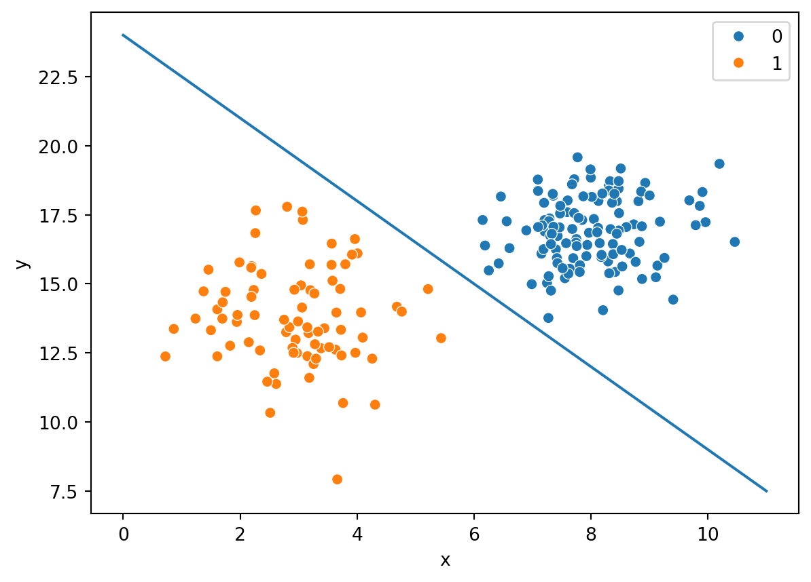
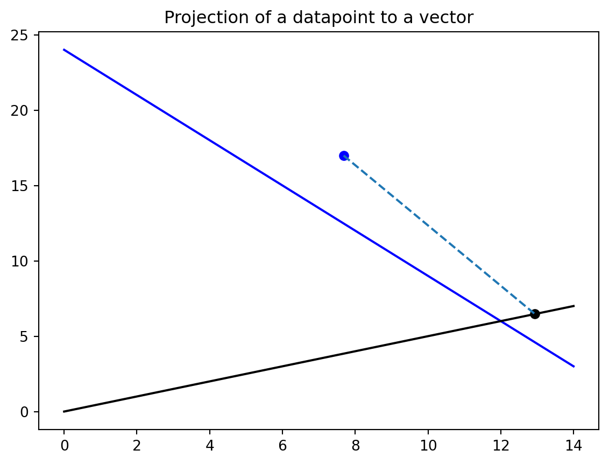

10 Support Vector Machine Modeling
10.1 Overview
What are SVMs?
Support vector machines are an algorithm that seeks to optimize and solve for the maximum possible linear distance separation between member points of different classes.
Specifically, SVMs seek to produce the equation of a line, plane, or hyperplane, depending on the number of dimensions:
\[ w^Tx+b = 0 \]
where \(w\) is a vector of weights, \(x\) is a vector of the data points used to train the model, and \(b\) is an adjusting bias.
Ultimately, one seeks to find the best possible equation with weights and biases above so that the margin between two different classes of points is maximized.
Consider the below graphic:
In Figure 10.1, one can clearly see that there are two groups of points with some degree of separation between the classes of orange and blue. A support vector machine may support finding a reasonable separation boundary to predict the class of a new data vector \(v\).
How can one go about calculating that?
10.1.1 Infinite Possibilities
Using the same data as above, there are countless means and methods to attempt to divide the data on a hard boundary to support the classification of points. Consider these examples:
Here’s one such line, with the equation \(y=-2x+27\)
Here’s another such line, with the equation \(y=-1.7x=25\)

And another with \(y=-1.5x+24\)
Are any of these lines better separators than the other? At least visually, one can tell that the separator seems pretty close in the case of the line \(y=-1.7x+25\), but there is no real measure or metric to tell if it is better, and if it is, by how much.
It’s clear that separation is needed, and the separation requires maximization to have a well-performing model for new vectors based upon the available training data. One could scan the infinite space of possibilities as done above and potentially find one that is good, but potentially is not optimal. As such, leveraging advanced vector mathematics is necessary to construct a constrained optimization problem that will produce an optimal solution.
10.1.2 Starting
Seeking a maximum marginal boundary is entirely dependent on \(w\) and \(b\). If these values were immediately available, the problem would be solved. Here are some important facts about these variables:
From the equation \(w^Tx+b=y\) if one were to take the vector \(w\) and plot it as a line, that line itself would be perpendicular or orthogonal to the best boundary separation line.
Taking the above equation for \(y=-2x+27\) (although it in-and-of itself is not necessarily the optimal solution), one can examine the orthogonality.
\(y=-2x+27\) \(2x+y-27=0\) \(w_1 = 2, w_2 = 1\) \(w=[2,1]\)
The slope of w, then is the rise over the run, thus being \(\frac{1}{2}\)
Plotting a line from the origin with slope of .5, the following result is produced:
This doesn’t look perpendicular - let’s zoom in
Looks a lot closer. The proof that they’re orthogonal truly lies in their slopes; when the slopes of two lines are negative multiplicative inverses of one another, the result is a perpendicular intersection.
Using this fact, one can project data points from their original location onto w. To do this, \(w\) must be converted to a unit vector:
\(\text{unit vector}(w) = \frac{w}{||w||}\)
Using this formulation, any datapoint \(v\) in the same dimensional space can be projected onto that vector:
\[ \text{projection}(p,w) = \frac{w}{||w||} \times \bigg(p\cdot \frac{w}{||w||}\bigg) \tag{10.1}\]
Where \(\times\) signifies multiplication and \(\cdot\) signifies the dot product of two vectors.

This is beneficial to us in the pursuit of optimization. One can see that the original point (in blue) is beyond the current best separator line (also in blue). The projected point (in black) lies directly along the vector \(w\) and also remains beyond the current best separator line. The transformation provides intuition and a starting important and useful metric one can use for optimization - the distance along \(w\) of a projected point tells which class the point should fall into. If the projected point is beyond the distance to the intersection of w and the best fit line, it should be in one class, whereas if it is shorter than the distance to the intersection, then it should fall into the other class.
This can be peformed for every data point in the source data:
A few things are immediately evident after this vector transformation:
All projected points lie along a single line, the vector \(w\)
The boundary separation line is not a best fit; some points in the blue class would be misclassified as members of the orange class. This line will need to be adjusted.
A handful of points in each class are closest to one another along the vector \(w\). The boundary needs to maximize the separation between these points.
Examining these findings, further math is needed. The optimal vector \(w\) needs to maximially separate these points in different classes. Consider the following application and decision for classification using this model:
Any original points below the optimal separating line (lower x and y value) should be classified as -1 (in the example case, the orange points).
Any original points above the optimal separating line (higher x and y value) should be classified as +1 (in the example case, the blue points).
Seeing the above projection and understanding the math behind it, the following equations must be fulfilled in order to achieve these objectives.
Let a function \(y_v\) be the prediction of the class of a datapoint \(v\)
For the first case: \[ w^Tx+b \geq +1 \]
\[ w^Tx+b -1 \geq 0 \tag{10.2}\]
In this case, \(y_v\) for some vector \(v\) would predict +1.
For the second case \[ w^Tx +b \leq -1 \]
\[ w^Tx +b + 1 \leq 0 \tag{10.3}\]
In this case, \(y_v\) for some vector \(v\) would predict -1.
If one multiplies both Equation 10.2 and Equation 10.3…
\[ (+1)(w^Tx-1 \geq 0) \]
\[ w^Tx-1 \geq 0 \]
\[ (-1)(w^Tx-1 \geq 0) \]
\[ -w^Tx+1 \leq 0 \]
\[ 0 \leq w^Tx-1 \]
\[ w^Tx-1 \geq 0 \tag{10.4}\]
The same result of \(w^Tx-1\geq 0\) is produced in both cases! This means that both equations can be consolidated to a single calculation:
\[ y_v(w^Tx)-1\geq 0 \tag{10.5}\]
For the best-fitting linear separator, Equation 10.5 should be true for every datapoint in the dataset. As long as it is true, then all points in one class will be mapped to -1, and all points in the other class will be mapped to +1.
10.1.3 Maximizing the Margin
The goal of an SVM is to maximize the margin between points of different classes. The examination of point projection onto the vector \(w\) with Equation 10.1, and the constraint of Equation 10.5 must hold true for every datapoint. An SVM seeks to solve for the best \(w\) for which Equation 10.5 is true.
Let’s define a margin using Equation 10.3 and Equation 10.2 by subtracting and adding 1, respectively:
\[ \text{lower margin} = w^Tx +b - 1 = 0 \]
\[ \text{upper margin} = w^Tx +b + 1 = 0 \]
The previous example graph clearly does not provide a good example to move forward. In order to have a better example, the separation line \(y=-2.3x+28\) will be used, with margin lines at \(\pm 1\) from the separation line:
Here is the depiction of the margin, at the boundary line +/- 1. One can see that this margin and boundary line do effectively separate the datapoints between classes, but the vector \(w\) in this case does not maximize the margin. If the margin were maximized, then the transparent blue margin lines would directly intersect the closest points in each respective class.
Let these two closest points be represented by \(x^-\) for the orange point, and \(x^+\) for the blue point. The size of the best margin, then, is defined as:
\[ \text{margin} = (x^+ - x^-) \cdot \frac{w}{||w||} \tag{10.6}\]
This formulation arises from the projection formula. When the points are projected onto \(w\), subtracting them will give the distance along each vector in the source data. And to get our optimal solution, one seeks to maximize this value. In the latest example, one can clearly see it’s not maximized yet. At maximum, those transparent blue lines will directly intersect the closest projectetd orange and blue points along the black vector, \(w\).
Recall Equation 10.4. One can combine this with Equation 10.6 using \(x^-\) and \(x^+\). In an ideal margin, both of these points would lay along the respective margins. In that case the equations would shift from inequalities to equalities
For \(x^-\): \(w^Tx+b + 1 = 0\) ; thus \(w^Tx = 1-b\). As \(w^Tx\) in this case represents the projection of \(x^-\) onto vector \(w\), \(1-b\) can be substituted in the margin formula and other equations.
For \(x^+\): \(w^Tx+b -1 = 0\) ; thus \(w^Tx=-1-b\). \(w^Tx\) represents the projection of the point \(x^+\) onto the vector \(w\), therefore it can be substituted with \(-1-b\) in other equations, as was the case for \(x^-\).
Plugging this into the margin formula:
\[ \text{margin} = \frac{[(1-b)-(-1-b)]}{||w||} \]
In this formulation, the values of \(b\) cancel, and the result becomes:
\[ \text{margin} = \frac{2}{||w||} \]
This is the length of the margin - precisely 2 divided by the magnitude, \(w\). SVMs seek to maximimze this value.
10.1.4 Quadratic Transformation and Optimization
SVMs seek the maximum value for \(\frac{2}{||w||}\), this can also be represented as \(\frac{1}{||w||}\). The constant in the numerator has no impact; if the inverse norm of \(w\) is maximized, the result will be the same. Simlarly, taking the inverse of this result for \(\text{max}\bigg(\frac{1}{||w||}\bigg)\) produces \(\text{min}(\||w||)\), because dividing by a smaller and smaller denominator will maximize the output value for \(\frac{1}{||w||}\)
Taking the indefinite integral of \(||w||\) gives \(\frac{1}{2}||w||^2\), a quadratic formulation. This quadratic formulation would still be subject to the minimization criterion for \(||w||\) and as such one can seek to minimize the value thereof.
By taking the quadratic formulation, efforts to seek the minimum fall within the realm of possibility. For any quadratic equation of the form \(y=ax^2+bx+c\), if the value of \(a\) is positive, then the equation is guaranteed to have a global minimum at the vertex point \((x,y)\) where \(x=\frac{-b}{2a}\) and that value of \(x\) is inserted into the source equation. This is common knowledge for anyone who has taken grade school algebra.
Another way of reaching this vertex point is taking the derivative of the source equation and setting it equal to zero, and solving for x: \(2ax + b = 0\) => \(2ax = -b\) => \(x = \frac{-b}{2a}\). This methodology is how the common knowledge vertex equation is derived.
The beauty of the quadratic equation \(\frac{1}{2}||w||^2\) is in that its derivative is simply \(||w||\). Thus, seeking out the global minimum point for \(\frac{1}{2}||w||^2\) will similarly produce the global minimum for \(||w||\) and solve the problem SVMs seek to solve.
SVMs goal, then is to:
minimize \(\frac{1}{2}||w||^2\)
constrain the solution subject to Equation 10.5
To implement this solution mathematically, the following is produced:
\[ L = \frac{1}{2}||w||^2 - \sum_{i=1}^n \lambda_i[y_i(w\cdot x_i + b) - 1] \]
The first half of this formulation is the minimization target. The second half examines all points within the training data, examining the constraint of Equation 10.5. Within the summation, one notices a lagrangian multiplier \(\lambda_i\), which corresponds to the (eigenvalue) of datapoint \(x_i\) projected onto vector \(w\)
Taking this formulation and calculating the partial derivative with respect to each factor and setting that result equal to zero enables optimization for the margin.
\[ L = \frac{1}{2}||w||^2 - \sum_{i=1}^n \lambda_i[y_i(w\cdot x_i + b) - 1] \]
\[ L = \frac{1}{2}||w||^2 - \sum_{i=1}^n \lambda_i[y_iw\cdot x_i + y_ib - 1] \]
\[ L = \frac{1}{2}||w||^2 - \sum_{i=1}^n \lambda_i y_iw\cdot x_i + \lambda_i y_ib - \lambda_i] \]
Taking the partial derivative with respect to \(w\) produces the following result: \[ \frac{\delta L}{\delta w} = ||w|| - \sum_{i=1}^{n} \lambda_i y_i x_i = 0 \]
Thus
\[ w = \sum_{i=1}^{n} \lambda_i y_i x_i \tag{10.7}\]
Taking the partial derivative with respect to \(b\) produces the following result: \[ \frac{\delta L}{\delta b} = -\sum_{i=1}^n \lambda_i y_i = 0 \]
Thus
\[ \sum_{i=1}^n \lambda_i y_i = 0 \tag{10.8}\]
Taking the partial derivative with respect to \(\lambda\) produces the following result: \[ \frac{\delta L}{\delta \lambda} = - \sum_{i=1}^n [y_i(w\cdot x_i) + b - 1] = 0 \tag{10.9}\]
Thus
\[ \sum_{i=1}^n [y_i(w\cdot x_i) + b - 1] = 0 \tag{10.10}\]
We now have partial derivatives with respect to each feature, \(w\) and \(b\).
\[ L = \frac{1}{2}\bigg|\bigg|\frac{\delta L}{\delta w}\bigg|\bigg| - \sum_{i=1}^{n} \lambda_i\bigg[y_iw\cdot x_i+\frac{\delta L}{\delta b}\bigg]-1 \]
\[ L = \frac{1}{2}\bigg|\bigg|\sum_{i=1}^{n} \lambda_i y_i x_i\bigg|\bigg| - \sum_{i=1}^{n} \lambda_i\bigg[y_i\sum_{i=1}^{n} \lambda_i y_i x_i\cdot x_i+\sum_{j=1}^n \lambda_j y_j\bigg]-1 \]
These formulae can be used to solve the optimization problem to maximize the margin:
\[ max\bigg[\sum_{}^{}\lambda_i -\frac{1}{2}\sum_{}^{} \lambda_i \lambda_j y_i y_j x_i^Tx_j : \lambda > 0\bigg] \tag{10.11}\]
and
\[ \bar{w} = \sum_{i=1}^{n}\bar{\lambda}_iy_ix_i \]
\[ L = \frac{1}{2}||w||^2 - \sum_{i=1}^n \lambda_i y_iw\cdot x_i + \lambda_i y_ib - \lambda_i] \]
\[ w = \sum_{i=1}^{n} \lambda_i y_i x_i \tag{10.12}\]
\[ \sum_{i=1}^n \lambda_i y_i = 0 \tag{10.13}\]
\[ L = \frac{1}{2} \bigg(\sum_{i=1}^{n} \lambda_i y_i x_i\cdot \sum_{j=1}^{n} \lambda_j y_j x_j\bigg) - \sum_{i=1}^n \lambda_i y_i \cdot \bigg(\sum_{j=1}^{n} \lambda_j y_j x_j\bigg) -\sum\lambda_iy_i b+\sum\lambda_i \tag{10.14}\]
\[ L = \frac{1}{2} \bigg(\sum_{i=1}^{n} \lambda_i y_i x_i\cdot \sum_{j=1}^{n} \lambda_j y_j x_j\bigg) - \sum_{i=1}^n \lambda_i y_i \cdot \bigg(\sum_{j=1}^{n} \lambda_j y_j x_j\bigg) +\sum_{i=1}^n\lambda_i \]
\[ L = \sum_{i=1}^n - \frac{1}{2}\sum_{i=1}^n\sum_{j=1}^{n}\lambda_i\lambda_jy_iy_jx_i\cdot x_j \]
The optimization problem here depends solely on the products of the sample points \(x\)
\[ \sum\lambda_iy_ix_i\cdot w + b \geq 0 \qquad \text{then +1, else -1} \]
The decision rule solely depends on the dot product of the vector \(w\) with each \(x_i\)
Taking these equations, the solution to the problem can be found using a system of partial differential equations. The data provides every \(x_i\) and \(y_i\). Since one seeks the values for \(w\) and \(b\) and so the solution lay within taking Equation 10.14, transforming it into a system of differential equations, performing substitutions, and solving for each \(\lambda_i\) to derive \(w\) and \(b\)
Having performed these calculations, there’s the truly best linear separating line:

One can clearly see that the best line, and its separators, perfectly and evenly divide the closest points projected onto the line for vector \(w\) from the origin. This will only ever be the case when the data is linearly separable, however. There are cases when the points will never have a perfect separator. Soft-margin SVM helps solve this, leveraging a loss function (called hinge loss) that allows poitns to be within that margin while still being on the appropriate side of the separating line. Hinge loss gets added as a constraint when solving for w and b. Points within the identified margin are given a negative or positive score based upon how close they are to the boundary.
10.1.5 Kernels
Soft-margin SVM doesn’t always solve the problem, though - and that’s where kernels come into play. Kernels are a special kind of function (one that can be expressed as the dot product of two vectors) that can be used to project the source data into a higher dimensional space. When data is not linearly separable in its given input vector space, a translation and projection into higher dimensional space may indeed render the data as linearly separable in that dimension. Additionally, those transformations themselves are always linear, in a sense, as they can be expressed as the dot product of two vectors! As such, many transformations that “reshape” or “curve” the data can be applied (in our current dimension) that allow for that separation.
Essentially a kernel function can be expressed as \(\phi(a,b) = a^T\cdot b\) where \(\phi\) is the kernel function and \(a\) \(b\) are two vectors of equal dimension. The key in making a kernel work is that it is expressible as the dot-product of two vectors. Because of this, a kernel function can be applied to each data point without transforming the datapoint into the new vector space, which reduces time and resource requirements to compute the transformation of the dual function.=
Examining Figure 10.2, the margin and boundary between data members of differing classes have linear separation between them. Using a linear kernel, one can achieve such a separation. This is the same as the previous example. What if another kernel was used?
Examining Figure 10.3, curvature is evident in the boundary and margins. In this example, the boundary is formed using a polynomial kernel with degree 2, so in this case, we see that the boundary represents a parabola. This is because the kernel function was a degree-2 polynomial, and produced a quadratic for the separating boundary and margin.
Examining Figure 10.4, curvature is evident in the boundary once more, and within the margins a high degree of curvature. The nature of the kernel in this case is Gaussian, and here in the case of a two-variable plot, these margins are akin to a bivariate kernel density estimate curve, shaping the boundary based on the variation in the two variables in question, x and y.
Using these and countless other kernel options, one has a plethora of options to produce means to separate data points of differing classes. SVMs operate upon the concept of maximizing the margin between classes of points. As such, distance measurements for each data point are necessary to establish the boundary and margin. In order to do this, labeled numeric data are required to perform the algorithm.
10.2 Data & Code
Data preparation for this sectionn leveraged the multiple correspondence analysis transformation described in Chapter 4 and executed in Appendix G. This transformation placed all data into categories, and then transposed all the categories into a high-dimensional space (100+ numeric components for two datasets).
The MCA transformation takes categorical variables and allows their transformation into numeric variables that are mathematically representative of the categorical variables’ explanation of the variance in the source data. Given that much of this research explores categorical variables, use of this transformation is ideal to perform SVM fitting and predictions.
Code for this portion can be found here
| MC1 | MC2 | MC3 | MC4 | MC5 | MC6 | MC7 | MC8 | MC9 | MC10 | ... | MC173 | MC174 | MC175 | MC176 | MC177 | MC178 | MC179 | MC180 | MC181 | outcome | |
|---|---|---|---|---|---|---|---|---|---|---|---|---|---|---|---|---|---|---|---|---|---|
| 19802 | -0.395791 | -0.007342 | -0.002586 | 0.139700 | -0.085748 | -0.260211 | -0.189705 | 0.385094 | -0.050331 | 0.075506 | ... | 0.037979 | -0.002696 | 0.002158 | -0.054542 | 0.000593 | -0.055064 | 0.009119 | 0.042021 | 0.016406 | 1.0 |
| 5079 | -0.385934 | 0.007869 | -0.000899 | 0.131327 | -0.086191 | -0.117109 | 0.199323 | 0.024096 | -0.188395 | -0.004187 | ... | -0.170291 | 0.007866 | 0.006137 | -0.070187 | -0.010118 | -0.066892 | 0.010241 | 0.048521 | 0.003360 | 1.0 |
| 98397 | 0.549122 | -0.011956 | -0.004883 | 0.249862 | -0.089089 | 0.345761 | -0.220686 | 0.367482 | 0.287569 | -0.885317 | ... | -0.031992 | -0.005057 | -0.011572 | 0.010408 | -0.010359 | -0.005075 | -0.005949 | 0.006013 | -0.043925 | 1.0 |
| 74177 | -0.331728 | 0.003822 | -0.001583 | 0.186949 | -0.090714 | 0.089241 | 0.149263 | -0.025485 | 0.047658 | -0.463093 | ... | 0.004029 | -0.005796 | 0.004005 | 0.002951 | -0.002420 | -0.000030 | 0.007648 | -0.001755 | 0.003687 | 1.0 |
| 186038 | 0.553501 | -0.017885 | -0.005622 | 0.002714 | -0.055184 | -0.288171 | -0.108958 | 0.185011 | 0.013230 | 0.069742 | ... | 0.014265 | 0.001304 | -0.001235 | -0.001331 | 0.000067 | -0.001660 | 0.014761 | 0.000392 | -0.003437 | 1.0 |
| 198591 | 0.415308 | 0.002248 | -0.010541 | -1.186163 | 0.388420 | 0.323469 | 0.017791 | -0.019427 | -0.229431 | -0.079265 | ... | 0.018986 | -0.001427 | -0.000745 | 0.009332 | -0.000447 | -0.002887 | -0.000058 | 0.000207 | -0.001050 | 0.0 |
| 86801 | 0.513935 | -0.011910 | -0.004112 | 0.358464 | -0.148302 | 0.156052 | 0.516545 | 0.003561 | -0.560134 | 0.018893 | ... | 0.008909 | -0.001141 | 0.005567 | -0.083898 | -0.003513 | 0.036125 | -0.001666 | 0.012692 | 0.011117 | 0.0 |
| 25886 | -0.416274 | -0.001995 | 0.001574 | 0.155765 | -0.083338 | -0.184283 | -0.048408 | 0.205960 | -0.257490 | 0.158323 | ... | 0.029698 | -0.000280 | -0.005628 | 0.082035 | 0.000910 | 0.008282 | 0.006985 | -0.001875 | 0.004094 | 1.0 |
| 55264 | -0.382743 | 0.034560 | 0.014600 | 0.394772 | 0.030559 | 1.174704 | 0.167997 | -0.265201 | 0.618897 | 1.187002 | ... | -0.002863 | -0.004697 | -0.002018 | -0.009496 | 0.021922 | 0.004649 | 0.007516 | -0.003037 | 0.003492 | 1.0 |
| 49229 | -0.435774 | 0.022266 | 0.003037 | 0.276735 | -0.040891 | 0.403036 | 0.261593 | 0.279622 | -0.076657 | -0.104839 | ... | -0.035574 | 0.002833 | -0.009538 | 0.109690 | -0.004987 | 0.000143 | -0.007453 | 0.002435 | 0.001828 | 0.0 |
10 rows × 182 columns
| MC1 | MC2 | MC3 | MC4 | MC5 | MC6 | MC7 | MC8 | MC9 | MC10 | ... | MC173 | MC174 | MC175 | MC176 | MC177 | MC178 | MC179 | MC180 | MC181 | outcome | |
|---|---|---|---|---|---|---|---|---|---|---|---|---|---|---|---|---|---|---|---|---|---|
| 178199 | 0.557975 | -0.012888 | -0.008255 | -0.681339 | 0.186318 | -0.176096 | 0.162710 | 0.261915 | 0.252912 | 0.072385 | ... | -0.018362 | 0.001762 | -0.002237 | 0.007449 | 0.000648 | 0.001616 | -0.006472 | 0.002910 | 0.001443 | 1.0 |
| 137556 | -0.410530 | -0.000828 | -0.003699 | -0.290098 | 0.068677 | -0.121001 | -0.016361 | -0.110793 | 0.015678 | 0.020075 | ... | -0.008002 | 0.001080 | -0.000169 | -0.005476 | -0.000003 | 0.001556 | 0.007470 | -0.002999 | 0.001252 | 1.0 |
| 98344 | -0.369964 | 0.004888 | -0.000156 | 0.063420 | -0.045233 | 0.079814 | -0.100194 | -0.342200 | 0.115985 | -0.258218 | ... | -0.021716 | 0.001817 | 0.003314 | -0.041210 | 0.008591 | -0.000771 | 0.008055 | -0.000609 | 0.001598 | 1.0 |
| 105823 | -0.399584 | 0.005109 | -0.001943 | 0.107977 | -0.057235 | 0.124324 | -0.101532 | -0.110395 | -0.000591 | -0.292039 | ... | -0.006897 | -0.000579 | 0.000285 | -0.010711 | 0.005903 | -0.001130 | -0.011523 | 0.000906 | 0.001217 | 1.0 |
| 105186 | -0.443327 | -0.001373 | -0.003742 | 0.108791 | -0.040490 | 0.110632 | -0.136756 | 0.166122 | -0.092940 | -0.238670 | ... | 0.021098 | 0.000541 | -0.000188 | -0.003300 | 0.008246 | 0.000135 | 0.008025 | -0.000767 | 0.004110 | 1.0 |
| 200113 | 0.572450 | -0.010359 | -0.001639 | 0.102263 | -0.071541 | 0.008504 | -0.062125 | -0.379783 | 0.192341 | -0.069866 | ... | 0.009448 | 0.000418 | -0.000607 | 0.008724 | 0.003305 | 0.000322 | -0.008794 | 0.002896 | -0.002213 | 0.0 |
| 190230 | -0.403811 | -0.004530 | -0.004169 | -0.027813 | -0.017153 | -0.215673 | -0.051969 | 0.095597 | 0.037482 | -0.008202 | ... | -0.096430 | 0.001841 | -0.001896 | 0.005776 | -0.000014 | -0.002877 | 0.007492 | -0.000778 | -0.001588 | 1.0 |
| 171730 | 0.534518 | -0.018751 | -0.009314 | 0.054827 | -0.070150 | -0.165235 | -0.312242 | -0.159896 | -0.091658 | 0.037932 | ... | 0.004227 | 0.000852 | 0.000416 | -0.013113 | -0.000036 | -0.002728 | -0.007415 | 0.002290 | -0.002596 | 1.0 |
| 70243 | -0.399914 | 0.000749 | -0.002368 | 0.205222 | -0.059058 | 0.229724 | 0.086329 | 0.196427 | 0.073199 | -0.229265 | ... | 0.015633 | -0.000250 | 0.000832 | -0.096836 | -0.005828 | -0.002118 | 0.007331 | 0.000944 | 0.043189 | 0.0 |
| 141590 | 0.678590 | -0.016426 | -0.003624 | -0.016476 | -0.048342 | -0.360799 | 0.436227 | -0.173389 | 0.820443 | -0.198222 | ... | 0.166421 | -0.002169 | 0.003682 | -0.010177 | 0.001155 | -0.010127 | -0.013108 | -0.001606 | -0.004048 | 1.0 |
10 rows × 182 columns
| MC1 | MC2 | MC3 | MC4 | MC5 | MC6 | MC7 | MC8 | MC9 | MC10 | ... | MC92 | MC93 | MC94 | MC95 | MC96 | MC97 | MC98 | MC99 | MC100 | outcome | |
|---|---|---|---|---|---|---|---|---|---|---|---|---|---|---|---|---|---|---|---|---|---|
| 19802 | 0.035320 | -0.157126 | 0.193705 | -0.198268 | 0.024201 | -0.144789 | 0.056622 | -0.341486 | 0.278649 | -0.166246 | ... | -0.030645 | 0.029432 | 0.006762 | -0.024463 | -0.007459 | 0.014745 | -0.016380 | -0.014022 | -0.000708 | 1.0 |
| 5079 | 0.092539 | -0.028634 | 0.140904 | -0.193200 | 0.124639 | -0.003875 | 0.089339 | -0.184956 | 0.362219 | 0.027053 | ... | 0.162988 | -0.153653 | 0.094588 | -0.044167 | -0.123395 | -0.018338 | -0.043940 | -0.010032 | -0.007908 | 1.0 |
| 98397 | 0.417049 | 0.534020 | -0.340702 | -0.512811 | 0.024532 | 1.258721 | 0.529317 | 0.169809 | -0.594121 | -0.174549 | ... | -0.065100 | 0.034841 | -0.008932 | 0.135239 | 0.027044 | -0.222262 | -0.281118 | -0.011966 | -0.010981 | 1.0 |
| 74177 | 0.098912 | 0.190143 | -0.130703 | -0.342589 | -0.272242 | 0.245315 | 0.039781 | -0.180147 | 0.790342 | -0.025024 | ... | 0.042786 | -0.021404 | -0.015928 | -0.015274 | -0.015363 | -0.004254 | 0.012601 | 0.005499 | -0.002804 | 1.0 |
| 186038 | -0.402971 | -0.171974 | 0.264226 | 0.017976 | 0.362929 | -0.340861 | 0.636881 | 0.358796 | -0.001688 | 0.195195 | ... | -0.069735 | 0.102187 | 0.275527 | -0.065498 | -0.028833 | 0.043789 | -0.004375 | 0.004163 | 0.000519 | 1.0 |
| 198591 | 0.072109 | -0.159959 | -0.089719 | 0.023277 | -0.255733 | 0.087002 | -0.021023 | -0.059626 | -0.138624 | -0.097811 | ... | 0.021528 | -0.013587 | -0.022604 | -0.022177 | 0.042426 | -0.008863 | -0.012634 | 0.008847 | -0.000344 | 0.0 |
| 86801 | 0.536284 | 0.192704 | 0.199612 | 0.056783 | 0.305302 | 0.034129 | 0.210694 | -0.022212 | -0.321394 | 0.125856 | ... | 0.089939 | -0.075783 | 0.079556 | 0.000437 | -0.064696 | -0.005054 | -0.037455 | -0.002559 | -0.002013 | 0.0 |
| 25886 | 0.180760 | -0.128252 | 0.434102 | -0.171299 | 0.369851 | -0.157209 | 0.199801 | -0.259761 | 0.170457 | -0.017427 | ... | 0.117490 | -0.087523 | 0.062050 | 0.007329 | -0.062199 | -0.012726 | -0.011162 | -0.009332 | -0.001542 | 1.0 |
| 55264 | 0.754760 | 0.843071 | -0.149326 | 1.798893 | -0.207131 | -0.555568 | 0.066201 | -0.111582 | -0.090040 | -0.173858 | ... | 0.033668 | -0.005236 | -0.093730 | -0.241771 | 0.024671 | -0.016426 | 0.023819 | -0.003320 | 0.027581 | 1.0 |
| 49229 | 0.349978 | 0.386805 | 0.192116 | 0.119353 | 0.192619 | -0.100142 | 0.317396 | -0.168959 | -0.347450 | 0.128455 | ... | 0.132477 | -0.085840 | 0.061927 | -0.037885 | -0.062687 | -0.004749 | -0.079584 | 0.010392 | -0.003942 | 0.0 |
10 rows × 101 columns
| MC1 | MC2 | MC3 | MC4 | MC5 | MC6 | MC7 | MC8 | MC9 | MC10 | ... | MC92 | MC93 | MC94 | MC95 | MC96 | MC97 | MC98 | MC99 | MC100 | outcome | |
|---|---|---|---|---|---|---|---|---|---|---|---|---|---|---|---|---|---|---|---|---|---|
| 178199 | -0.681117 | -0.051433 | 0.277679 | 0.369915 | -0.035447 | 0.568098 | -0.347659 | -0.295522 | -0.022856 | -0.104987 | ... | -0.177595 | -0.214964 | 0.503428 | -0.180224 | -0.009436 | 0.048438 | 0.000742 | -0.057809 | 0.000071 | 1.0 |
| 137556 | -0.055349 | -0.340510 | -0.074999 | 0.066456 | -0.187286 | 0.022036 | 0.025855 | -0.165568 | -0.060584 | -0.116414 | ... | 0.002477 | -0.012443 | 0.029293 | -0.024813 | -0.005348 | 0.002201 | 0.006812 | 0.008247 | -0.000504 | 1.0 |
| 98344 | 0.164168 | -0.024184 | -0.306548 | -0.191936 | -0.154057 | 0.287933 | -0.161152 | 0.200214 | 0.034341 | 0.300533 | ... | -0.104275 | 0.073363 | -0.058736 | -0.048242 | -0.181412 | 0.104229 | 0.275174 | 0.004011 | 0.011322 | 1.0 |
| 105823 | 0.223559 | 0.070986 | -0.222537 | -0.176184 | -0.045244 | 0.288873 | 0.076911 | -0.042651 | -0.070076 | -0.124338 | ... | -0.050543 | 0.045301 | -0.064346 | -0.037276 | 0.022647 | 0.105317 | 0.272778 | 0.009806 | 0.007859 | 1.0 |
| 105186 | 0.368102 | -0.057758 | 0.149457 | -0.085099 | 0.123705 | 0.407306 | 0.333296 | -0.104275 | -0.250100 | -0.125725 | ... | -0.085787 | 0.065505 | -0.043815 | -0.018329 | 0.056011 | 0.095535 | 0.265285 | 0.006008 | 0.008946 | 1.0 |
| 200113 | -0.087788 | 0.154956 | -0.490424 | -0.007063 | 0.050108 | -0.197714 | -0.165991 | -0.058704 | -0.228989 | 0.492819 | ... | 0.088204 | -0.041970 | -0.012309 | 0.030888 | 0.169404 | -0.088468 | 0.016170 | 0.006357 | 0.004487 | 0.0 |
| 190230 | -0.090555 | -0.310321 | 0.198541 | 0.059251 | 0.121211 | -0.048498 | 0.425017 | 0.102654 | -0.025761 | -0.006558 | ... | 0.382214 | 0.287886 | 0.270188 | -0.048943 | -0.088857 | 0.011729 | -0.004877 | -0.224232 | -0.000425 | 1.0 |
| 171730 | -0.029513 | -0.287094 | -0.101207 | 0.032309 | -0.258976 | 0.011590 | -0.030541 | -0.161341 | -0.009900 | -0.092041 | ... | 0.061963 | -0.025223 | -0.027180 | -0.012431 | -0.010130 | 0.010420 | 0.012442 | 0.010022 | 0.000339 | 1.0 |
| 70243 | 0.326132 | 0.144927 | -0.063694 | 0.042833 | 0.075293 | 0.108164 | 0.160871 | -0.133439 | -0.144664 | -0.164463 | ... | -0.127296 | 0.047064 | 0.044511 | -0.019756 | 0.062633 | -0.019343 | -0.049563 | 0.001796 | -0.002390 | 0.0 |
| 141590 | -1.254027 | 0.450119 | -0.577738 | 0.106789 | 0.812703 | -0.276386 | -0.155099 | 0.761203 | -0.181679 | -0.249654 | ... | 0.448325 | 0.130052 | 0.297095 | -0.091568 | 0.285107 | 0.097502 | -0.021709 | 0.361085 | 0.001187 | 1.0 |
10 rows × 101 columns
Notice the indexes between Table 10.1 and Table 10.3 match for the training data, and that the indexes between Table 10.2 and Table 10.4 also match for testing data. This enables a direct performance comparision between each model trained with and without protected class information. Furthermore, the indexes in Table 10.1 and Table 10.2 are disjoint (as are the indexes between Table 10.3 and Table 10.4). This means that for both models, the training and testing data are disjoint sets.
These train-test splits were generated by stratifying on outcome (loan approved / denied) with a random state of 9001 and an 80/20 split for training and testing. Using the same random state between the two different MCAs allowed for extracting the same set of record indices for comparison of models trained on the same records leveraging different features.
10.3 Results
10.3.1 RBF Kernel
10.3.1.1 C=0.5
| Model | Data | Accuracy | Precision | Recall | F1 | ROC-AUC |
|---|---|---|---|---|---|---|
| SVM RBF(C=0.5) | Without Protected Classes | 0.963408 | 0.984684 | 0.972340 | 0.978473 | 0.941480 |
| SVM RBF(C=0.5) | With Protected Classes | 0.962671 | 0.981249 | 0.974986 | 0.978473 | 0.932438 |
10.3.1.2 C=1
10.3.1.3 C=1.5
10.3.1.4 Summary Table (All RBF Models)
| Model | Data | Accuracy | Precision | Recall | F1 | ROC-AUC |
|---|---|---|---|---|---|---|
| SVM RBF(C=0.5) | Without Protected Classes | 0.963408 | 0.984684 | 0.972340 | 0.978473 | 0.941480 |
| SVM RBF(C=0.5) | With Protected Classes | 0.962671 | 0.981249 | 0.974986 | 0.978473 | 0.932438 |
| SVM (RBF,C=1) | Without Protected Classes | 0.963925 | 0.985485 | 0.972139 | 0.978767 | 0.943759 |
| SVM (RBF,C=1) | With Protected Classes | 0.963999 | 0.982785 | 0.974986 | 0.978767 | 0.937026 |
| SVM (RBF,C=1.5) | Without Protected Classes | 0.963925 | 0.985485 | 0.972139 | 0.978767 | 0.943759 |
| SVM (RBF,C=1.5) | With Protected Classes | 0.963999 | 0.982785 | 0.974986 | 0.978767 | 0.937026 |
Incredibly similar performance for accuracy across all values for C. The best performing model was tied between C=1 and C=1.5 for models including protected classes.
10.3.2 Linear Kernel
10.3.2.1 C=0.5
10.3.2.2 C=1
10.3.2.3 C=1.5
10.3.2.4 Summary Table (All LIN Models)
| Model | Data | Accuracy | Precision | Recall | F1 | ROC-AUC |
|---|---|---|---|---|---|---|
| SVM LIN(C=0.5) | Without Protected Classes | 0.961638 | 0.983777 | 0.971162 | 0.977429 | 0.938257 |
| SVM LIN(C=0.5) | With Protected Classes | 0.964048 | 0.984922 | 0.972858 | 0.977429 | 0.942419 |
| SVM LIN(C=1) | Without Protected Classes | 0.961343 | 0.982843 | 0.971765 | 0.977273 | 0.935755 |
| SVM LIN(C=1) | With Protected Classes | 0.964171 | 0.984896 | 0.973030 | 0.977273 | 0.942420 |
| SVM LIN(C=1.5) | Without Protected Classes | 0.961416 | 0.982564 | 0.972139 | 0.977324 | 0.935093 |
| SVM LIN(C=1.5) | With Protected Classes | 0.964171 | 0.984726 | 0.973203 | 0.977324 | 0.941997 |
10.3.3 Sigmoid Kernel
10.3.3.1 C=0.5
10.3.3.2 C=1
10.3.3.3 C=1.5
10.3.3.4 Summary Table (All SIG Models)
| Model | Data | Accuracy | Precision | Recall | F1 | ROC-AUC |
|---|---|---|---|---|---|---|
| SVM SIG(C=0.5) | Without Protected Classes | 0.944375 | 0.967320 | 0.967654 | 0.967487 | 0.887225 |
| SVM SIG(C=0.5) | With Protected Classes | 0.947031 | 0.970495 | 0.967481 | 0.967487 | 0.896825 |
| SVM SIG(C=1) | Without Protected Classes | 0.939407 | 0.965541 | 0.963542 | 0.964541 | 0.880157 |
| SVM SIG(C=1) | With Protected Classes | 0.944473 | 0.967593 | 0.967481 | 0.964541 | 0.887989 |
| SVM SIG(C=1.5) | Without Protected Classes | 0.964171 | 0.984726 | 0.973203 | 0.978931 | 0.941997 |
| SVM SIG(C=1.5) | With Protected Classes | 0.944375 | 0.967320 | 0.967654 | 0.978931 | 0.887225 |
10.3.4 Total Model Summary
| Model | Data | Accuracy | Precision | Recall | F1 | ROC-AUC |
|---|---|---|---|---|---|---|
| SVM RBF(C=0.5) | Without Protected Classes | 0.963408 | 0.984684 | 0.972340 | 0.978473 | 0.941480 |
| SVM RBF(C=0.5) | With Protected Classes | 0.962671 | 0.981249 | 0.974986 | 0.978473 | 0.932438 |
| SVM (RBF,C=1) | Without Protected Classes | 0.963925 | 0.985485 | 0.972139 | 0.978767 | 0.943759 |
| SVM (RBF,C=1) | With Protected Classes | 0.963999 | 0.982785 | 0.974986 | 0.978767 | 0.937026 |
| SVM (RBF,C=1.5) | Without Protected Classes | 0.963925 | 0.985485 | 0.972139 | 0.978767 | 0.943759 |
| SVM (RBF,C=1.5) | With Protected Classes | 0.963999 | 0.982785 | 0.974986 | 0.978767 | 0.937026 |
| SVM LIN(C=0.5) | Without Protected Classes | 0.961638 | 0.983777 | 0.971162 | 0.977429 | 0.938257 |
| SVM LIN(C=0.5) | With Protected Classes | 0.964048 | 0.984922 | 0.972858 | 0.977429 | 0.942419 |
| SVM LIN(C=1) | Without Protected Classes | 0.961343 | 0.982843 | 0.971765 | 0.977273 | 0.935755 |
| SVM LIN(C=1) | With Protected Classes | 0.964171 | 0.984896 | 0.973030 | 0.977273 | 0.942420 |
| SVM LIN(C=1.5) | Without Protected Classes | 0.961416 | 0.982564 | 0.972139 | 0.977324 | 0.935093 |
| SVM LIN(C=1.5) | With Protected Classes | 0.964171 | 0.984726 | 0.973203 | 0.977324 | 0.941997 |
| SVM SIG(C=0.5) | Without Protected Classes | 0.944375 | 0.967320 | 0.967654 | 0.967487 | 0.887225 |
| SVM SIG(C=0.5) | With Protected Classes | 0.947031 | 0.970495 | 0.967481 | 0.967487 | 0.896825 |
| SVM SIG(C=1) | Without Protected Classes | 0.939407 | 0.965541 | 0.963542 | 0.964541 | 0.880157 |
| SVM SIG(C=1) | With Protected Classes | 0.944473 | 0.967593 | 0.967481 | 0.964541 | 0.887989 |
| SVM SIG(C=1.5) | Without Protected Classes | 0.964171 | 0.984726 | 0.973203 | 0.978931 | 0.941997 |
| SVM SIG(C=1.5) | With Protected Classes | 0.944375 | 0.967320 | 0.967654 | 0.978931 | 0.887225 |
Examining Table 10.5, all models had very similar performance, with all having incredibly similar scores across accuracy, precision, recall, and F1, regardless of the model or the inclusion / exclusion of protected class information. Directly comparing each run reveals less than a 0.3% difference between models trained with/without protected class data for accuracy, less than 0.3% for precision, less than 0.5% for recall, and less than 0.5% for F1.
When sorted by each metric in descending order, the top performer, for every single metric category is SVM with Radial Basis Function Kernel at C=0.5 when excluding protected class information.
For the Sigmoid kernel, the ROC-AUC score was substantially lower (by about 6%).
This reveals several important factors about the data:
The data, with high accuracy, is best separated with RBF soft margins highly dimensional space
The most effective modeling can be achieved when excluding protected class information in the models
The metrics are quite revealing too. SVM modeling with RBF kernel and exclusion of protected class information delivered high performance metrics above 94% for all values. This modeling would likely be further improved through the inclusion of non-publically available information, such as applicant / co-applicant credit scores, alongside other relevant financial information variables.
This resonates with the findings from other models executed and generated in this research - that there is little to no benefit in leveraging protected class information as part of machine learning models.
The finding here is by far the best performer (at least for a single run, non-cross validated) model. Every single metric for the SVM RBF C=0.5 is at 94% or better. This is remarkable performance and clearly demonstrates the efficacy of the model when leveraged on multiple correspondence analysis transformation on categorical data. While the source is highly dimensional (near 100 columns), it pales in comparison to the binary sparse matrix of over 150 columns. The dimensionality reduction, the sufficient explained variance, and the overall performance of this model is eye-opening with regards to all the work performed thus far in this study.
For comparitive performance in the conclusions section, the top performers on a per-kernel basis will be compared against all other models. The best performers are as follows:
Linear Kernel: C=1
Sigmoid Kernel: C=1.5
RBF Kernel: C=0.5